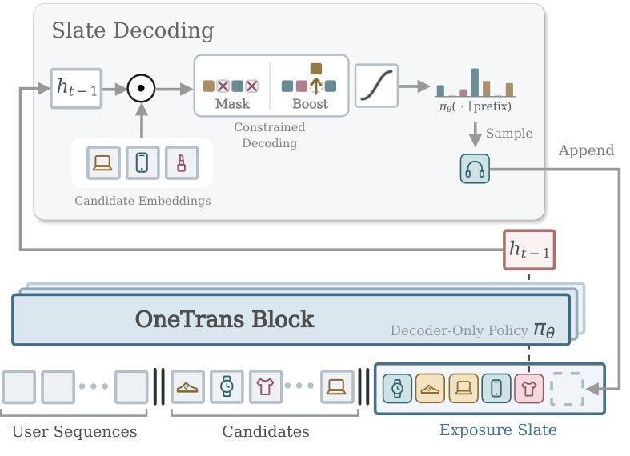

Contents · 9 sections
1What problem is it solving?2The overall flow: a reward model in training, only the decoder online3How does the reward model score a whole screen?4How does the decoder choose one position at a time?5Where do the business rules go?6Experiments: which parts actually matter?7Limitations as I see them8How a recommendation team could try it9VerdictSHARE
Teams working on reranking and mix-ranking should read this: it turns two stages that have long run on rules into a generation problem that improves with more compute, and the system is fully deployed. The reranking and mix-ranking steps that decide what fills the screen have long run on hand-written rules and small models: how product cards, short videos, livestreams and ad cards interleave is tuned by hand. OneTrans-GSR merges both steps into one autoregressive Transformer that generates the whole screen position by position. In training, a reward model scores the whole screen and guides reinforcement learning. Business rules are handled during decoding. Mandatory rules mask out violating candidates, while rules such as spacing and quotas deduct from violating candidates, for example when items with a given tag would exceed a cap within a window of consecutive positions. Offline, a larger reward model judges screens more accurately, and a larger decoder raises the reward model's estimated order and GMV gains. In production, GMV per user rose 2.63% while end-to-end latency across reranking and mix-ranking fell 13%.
What problem is it solving?
The setting is the last step of an e-commerce recommender. Upstream fine-ranking has already scored the candidates, which come from different businesses: product cards, short videos, livestreams and ad cards. The last step picks a fixed number of them from this pool, orders them, decides how the content types interleave, and shows them as one screen.
The previous production system is a generator-evaluator design: several specialized generators each assemble a few candidate screens, and a separately trained evaluator picks one to serve. Assembly relies on many hand-written rules, such as scattering, quotas, deduplication, fatigue control and commercial boosting.
An illustrative example of why this is hard:
| Candidate (illustrative) | Type | Fine-ranking score |
|---|---|---|
| A | Product card | 0.9 |
| B | Product card | 0.8 |
| C | Livestream | 0.6 |
| D | Short video | 0.5 |
| E | Ad card | 0.4 |
Taking the top four by fine-ranking score gives A, B, C, D: two similar product cards sit side by side, and the ad card gets no slot. But what an item is worth depends on its position, its neighbors and the mix of types on the screen, so a screen's quality cannot be split into a sum of per-item scores. A rule system can only search the few arrangements its rules allow, and covering more arrangements means adding more rules and components. The authors' point is that screen quality then depends on expert knowledge and engineering effort, not on data and compute.
The overall flow: a reward model in training, only the decoder online
OneTrans-GSR has two models: a reward model that scores whole screens, and a decoder that generates a screen position by position. Both are built from OneTrans blocks with separate parameters. The reward model is used only offline: in training it scores screens for reinforcement learning, and in offline evaluation it scores generated screens. Only the decoder is deployed.
| Stage | What it does | Output |
|---|---|---|
| 1. Reward model pretraining | Trains on screens actually shown in production and the user feedback on them | A model that gives any screen click, order and GMV scores |
| 2. RL post-training | The decoder samples several screens under constraints, the frozen reward model scores them, and the scores update the decoder | The production policy |
| Serving | The decoder generates a few screens in parallel and serves the one with the highest cumulative log-probability | The screen shown |

Because the reward model never runs online, its size is limited only by offline training resources, so it can be larger than any model that could be served. This is one precondition for "more compute, better screens". The parts follow.
How does the reward model score a whole screen?
The reward model takes one screen in display order, one token per item, combining user, item and context features plus the upstream fine-ranking score. The authors append a learnable EOS token. Attention is causal: each item sees only itself and the items before it, while the EOS token sees the whole screen. The EOS token's output is therefore a summary of the screen read in order, and the model reads three scores from it: the screen's click count, order count and GMV.
Labels come from the screen that was actually shown. The alternative of summing per-item predictions into a screen score was not used, because the screen score should reflect order and composition.
There is also a long-term objective: repurchase within 14 days. Repurchases are too sparse and too delayed to learn per screen. The authors train a separate repurchase model. For a generated screen, each item gets "probability of a click × probability of purchase after the click × probability of repurchase within 14 days after purchase", summed over the screen. The first two probabilities come from the screen reward model's per-item auxiliary outputs, and the repurchase probability comes from the repurchase model. This assumes a user consumes at most one item per screen, which the logs support: 98.3% of screens have at most one click. Hoot says

- Illustrative: item 1 0.5×0.2×0.1 = 0.01
- Illustrative: item 2 0.3×0.1×0.2 = 0.006
- Screen repurchase score = 0.01 + 0.006 = 0.016
The top path is the screen reward model. The EOS token sits last and sees the whole screen. The click, order and GMV scores are all read from it. The bottom path is the repurchase score. Repurchases are too sparse to learn per screen. So each item multiplies three probabilities, and the screen sums them. The numbers below are illustrative and only show how the sum works.
Source
paper §5.1.1 EOS readout of three screen objectives; §5.1.3 LTV model: per-item probabilities multiplied, then summed over the screenA reward model learned from finite logs makes errors. If the policy seeks out arrangements the reward model overrates, offline scores look good while production does not improve. The authors score with three differently initialized reward models and each screen's score is the three models' mean minus 0.01 times their standard deviation. The more the three disagree, the more is deducted. As shown later, switching to this ensemble scorer gave a larger online gain, but the paper does not separate how much came from averaging and how much from the deduction.
How does the decoder choose one position at a time?
The decoder's input has two parts: a context part with the user behavior sequence and all candidates, and a generated part with the items already chosen. Before generation there is a prefill pass in which every candidate sees all the user behavior and every other candidate in the pool. Each candidate thus carries information about the user and the whole pool from the first layer. After the prefill comes a separator token whose output hidden state picks the first item. Each chosen item adds one token to the generated part. The next hidden state is computed from the prefill result plus these generated tokens, and it picks the next item. Hoot says
Prefill runs once so every candidate carries information about the user and the whole pool. After that each step picks one item. Chosen candidates get a score of negative infinity, so none is picked twice.
Source
paper §5.2 decoder: prefilled context, SEP as the start token, cosine scoring with business adjustments, selection without replacementUnlike a language model, there is no fixed vocabulary. Each request's candidate pool is this request's "vocabulary". At each step the decoder computes the cosine similarity between its current hidden state and each candidate's vector in the embedding table, adds a business adjustment, sets already chosen candidates to negative infinity, then turns the candidates' scores into selection probabilities and picks the next item by those probabilities.

One detail: each candidate is one token combining user, item, context and numeric features. The same candidate embedding table serves two roles. During prefill it supplies each candidate's input vector. At each scoring step it supplies the candidate vectors compared against the hidden state. Gradients from the scoring path pull frequently chosen items of the same category in the same direction, which can make embeddings crowd together. The authors stop the gradient on the scoring path, so embeddings are updated only through the input path. Removing this makes all three offline metrics worse.
Online, several screens are generated in parallel. The KV cache for the user behavior and candidates is computed once and shared by all screens; each screen stores only its own chosen items. With the shared cache, peak memory is only about 17% above the baseline without candidate prefill.
Where do the business rules go?
Rules come in two kinds and go in different places.
Mandatory rules, along with local spacing and quota rules, are handled during decoding. Mandatory rules set violating candidates to negative infinity. Spacing and quotas use a small deduction, which only makes violating candidates less likely to be chosen and does not guarantee compliance. For a rule like "at most 1 livestream in any 4 consecutive positions" (illustrative), if the first 3 positions already hold a livestream, a livestream candidate at position 4 loses 0.1 from its score. The other case is a lower bound: if not picking a tagged item now would leave too few positions to reach the minimum, untagged candidates are penalized too.
Soft preferences, such as reducing fatigue or giving cold-start content exposure, go into the training reward. Fewer violations mean a higher reward on this term.
Post-training uses a method called GMR-PO. For each request several screens are sampled, and the reward model gives each screen four scores: click, order, GMV and repurchase. Each score is first rescaled across the screens sampled for the same request, with the lowest near 0 and the highest at 1, then the scores are combined with a weighted geometric mean into one total. The geometric mean is more sensitive to low scores: when one objective is very low, the total drops further, and the other objectives must be much higher to make up for it. An illustrative example: two screens have normalized click and GMV scores of 0.9 and 0.1, and of 0.5 and 0.5. With equal weights the sums are the same, but the geometric mean gives 0.3 for the first screen and 0.5 for the second, so the lopsided screen loses.
The total and the rule reward are standardized separately within the group; the rule part is multiplied by 0.1 and added to the total's part to give each screen's advantage, which updates the decoder with a GRPO-style clipped objective plus a KL constraint. Why standardize separately? Adding the two rewards first and then standardizing makes rule violations climb again late in training; standardizing them separately keeps violations lower.
Experiments: which parts actually matter?
Offline evaluation works like this: on candidate pools from real logs, the decoder generates a screen, the reward model scores it, and the score is compared with the screen the old system actually showed. Note that this gain is the reward model's estimate, not real clicks or sales.
| Variant | Screen clicks | Screen orders | Screen GMV |
|---|---|---|---|
| Full OneTrans-GSR | 0.0768 | 0.3132 | 0.2870 |
| No autoregression, all positions predicted in parallel | -0.2413 | -0.4530 | -0.5426 |
| No RL post-training | 0.0676 | 0.0119 | -0.0400 |
| Candidates interact only at the final scoring | 0.0420 | 0.2710 | 0.2070 |
| No stop-gradient on the scoring path | 0.0540 | 0.2050 | 0.2010 |
| Post-training with GRPO instead | 0.0748 | 0.2610 | 0.2060 |
The numbers are relative gains over the screens the old system actually showed; 0.2870 means 28.7% higher. Three points stand out. First, without autoregression all three turn negative, showing that generating position by position, with each step seeing what was already chosen, is the foundation of the method. Second, without post-training clicks barely change while orders and GMV drop sharply, so reinforcement learning mainly lifts the conversion objectives. Third, letting candidates see each other during prefill works better than letting them meet only at the output.
On rules, the authors compare three approaches. Adding the two rewards before standardizing gives a content-type violation rate of 3.97%; standardizing them separately, the full system, brings it to 3.08%. A third variant with no rule reward, relying only on decoding constraints, has a content-type violation rate of just 0.11%, but its estimated click and GMV gains are somewhat lower than the full system's. The full system thus trades some violations for gains.
The most interesting result compares a single reward model with the three-model ensemble. A policy was trained with each scorer, and both went into the same production A/B test.
| Reward scorer | Offline estimated GMV gain | Online GMV per user gain |
|---|---|---|
| Single reward model | 33.70% | 1.41% |
| Three-model ensemble minus disagreement | 28.70% | 2.63% |
The single model scores higher offline but lower online. This is consistent with the policy exploiting the reward model's errors, though the authors note the comparison cannot pin down the cause. My view: offline reward scores are a directional guide, not a forecast of gains.
The production A/B test ran for a week with random assignment by account, against the old generator-evaluator system. Replacing the whole reranking and mix-ranking stage with OneTrans-GSR raised GMV per user by 2.63% and repurchase rate by 2.03%, both significant; end-to-end latency across reranking and mix-ranking fell 13%. For the decoder alone, compilation, BF16, KV cache and other optimizations together make it 16.68 times faster than the first implementation.
Limitations as I see them
First, nearly all offline conclusions rest on reward-model scores. Only the screen actually shown has labels in the logs; newly generated arrangements have no real feedback. The offline and online orderings flip: the single model scores higher offline (33.70% vs 28.70%) but lower online (1.41% vs 2.63%). Offline reward scores can misjudge even which of two policies is better.
Second, the evidence for "more compute, better screens" is limited. A larger reward model improves its AUC at judging screens; a larger decoder raises estimated orders and GMV while clicks stay roughly flat. The authors themselves say the fitted trends cover only the tested configurations and are not a general law.
Third, each rule is checked on its own. Passing every check does not guarantee a screen that meets all quotas at once, so the total violation rate is not zero.
How a recommendation team could try it
- Start by training only a screen-level reward model that reads the screen score from an EOS token, and check whether its AUC on real exposures beats summing per-item scores. This is the cheapest step, and it decides whether the rest is feasible.
- Using existing fine-ranking scores as a feature, build a decoder that picks from the candidate pool position by position, skip RL for now, and compare it offline with the current rule system.
- Then add RL post-training with a reward of several reward models' mean minus their disagreement; always run a small-traffic A/B test before launch, because offline scores can overstate gains.
- Put mandatory rules into the decoding mask from the start, and move soft preferences into the reward gradually.
Verdict
In one sentence: hand screen arrangement to a generative policy trained against an offline reward model, run only one decoder online, and turn rules from the main actor into constraints.
| Dimension | Assessment |
|---|---|
| Problem importance | High. Reranking and mix-ranking decide what users see, and have long relied on hand-tuned rules |
| Novelty | Medium-high. Most parts come from prior work; the value is wiring screen-level reward, constrained decoding and multi-objective post-training into one deployable system |
| Evidence | Medium-high. Thorough ablations and a week-long production A/B test, but offline conclusions all depend on the reward model |
| Engineering cost | High. Several reward models, reinforcement learning and changes to the serving path |
| Worth trying | Yes. Start with the screen-level reward model, which carries the least risk |
How did this read for you?
Hoot made a note. Thanks for the feedback.
One tap, no sign-in; tap again to undo. Only anonymous counts are kept, never who you are.
Discussion
Add experiment details, reproduction notes or a different take. Requires a GitHub sign-in.
Loading the discussion…